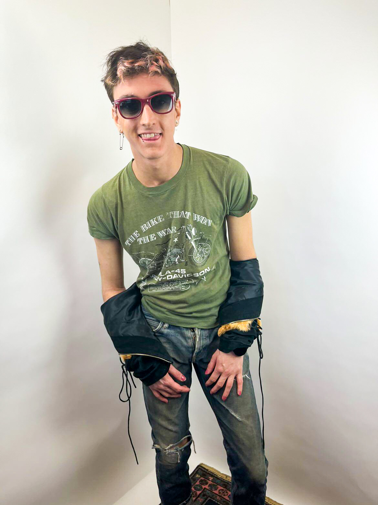

Bendi! The most stylish professor on campus—hands down. You are the polite diva of my dreams. I came into your French class with a history of fear. I'd been pulled from Spanish in high school after being belittled and lied about by my teacher, so language learning became a source of anxiety. But with you, it became something else: joy, vulnerability, and curiosity. You let me stumble. You let me fall. And you helped me stand again. I learned that it's okay to make mistakes, and through that, I learned how to fall in love with language again. Thank you for making the classroom safe and for making learning beautiful. I would love to keep in contact with you after graduation.
